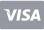
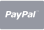

Features
HTML Generator
Effortlessly manage HTML templates and instantly preview changes on localhost.
Code Inspection
Easily browse and extract HTML code from the views within structured file system.
Reusable HTML
Generate each page using reusable and centrally managed HTML components and layouts.
Save Time
Find and analyze the HTML code you need, then seamlessly transfer it to your project.
Prototype Showcase
Customize styles, navigations, and page blocks for effective prototype demos.
Integrated Testing
Apply changes and test them across all template pages before integrating into your project.
Code Organization
Refer to the Composer's view and asset arrangements to efficiently organize your project.
Data Models
Refer to preset data arrays with demo content for iterating lists, tables, and other UI elements.
Configuration
Easily change global settings like KeenIcons style, menus, and layout options on the fly.
How It Works
Purchase Composer
Purchase Composer from Composer Pricing and download the version compatible with your Metronic version from the from Keenthemes Market .Use Composer
Unpack the Metronic package, copy the content and paste it into the Composer's directory. and follow the Composer Installation guide to start using Composer.Pricing
License for a single developer, usable for unlimited projects.
License for teams with up to 15 developers, usable for unlimited projects.



FAQ
Preparation
Unzip theme folder
myproject
:
-
myproject/metronic-tailwind-html -
myproject/metronic-composer
Copy metronic-tailwind-html
myproject
folder:
cd myproject
Copy content of metronic-tailwind-html
metronic-tailwind-html
into
metronic-composer/themes/metronic-tailwind-html
Windows
:
xcopy /E /I metronic-tailwind-html\* metronic-composer\themes\metronic-tailwind-html\
MacOS/Unix/Linux
:
cp -R metronic-tailwind-html/* metronic-composer/themes/metronic-tailwind-html
metronic-composer/themes/metronic-tailwind-html
to see if the content is copied there.
Installation
Install Python
python --version
python3 --version
Launch Terminal
cd metronic-composer
Run the script
Windows
:
run.bat --debug
MacOS/Unix/Linux
:
./run.sh --debug
http://localhost:8001/
after the installation is complete.
Static HTML Files Generation
Launch Terminal
cd metronic-composer
Run the generate script
Windows
:
generate.bat
MacOS/Unix/Linux
:
./generate.sh
Locate the Generated HTML Files
themes/metronic-tailwind-html/dist/html
example.com/dashboard
will have an HTML file named
dashboard.html
.
Troubleshooting
PATH
.
python --version
or
python3 --version
in your command prompt or terminal. If Python is installed, it will display the version number.
When running the installer, make sure to tick the box that says "Add Python to environment variables". This will ensure that Python is added to the systems PATH variable.
PATH
variable. Here's how to do it on Windows:
Environment Variables
Search for
Environment Variables
in the Windows search bar and select
Edit the system environment variables
then click on
Environment Variables
.
Edit Variables
Under
System variables
, find the
Path
variable, select it, and click on
Edit
.
Add Variable
Click on
New
and add the path where Python is installed. By default, it is
C:\PythonXX
, where XX is the version number.
Complete
Click on
OK
to close all dialog boxes and restart your command prompt or terminal.
bash: ./run.sh: Permission denied
.
run.sh
file executable on
MacOS/Unix/Linux
, you can run the following command in the terminal:
chmod +x run.sh
run.sh
file executable, which means that you can run it as a script. Running the script will start the Flask development server and build the preview.
Theme API
libs/theme_helper.py
file for global Theme API settings as listed in the below table.
| Method | Description |
|---|---|
layout(file, param={}, render=True)
|
Renders a specified layout file with optional parameters. If render is set to True, the layout is rendered directly. |
partial(file, param={})
|
Renders a specified partial file with optional parameters. This method is used to include reusable components in a layout or page. |
page(file, param={})
|
Renders a specified page file with optional parameters. This method is typically used for rendering full pages within an application. |
getPartial(scope, file, param={}, render=True, prettify=False)
|
Retrieves and optionally renders a partial file within a given scope, using optional parameters. The prettify option can be used to format the output for readability. |
getAssets(type)
|
Retrieves all assets of a specified type (e.g., CSS, JavaScript) from the project. |
getAsset(type, name)
|
Retrieves a specific asset by type and name, such as a particular CSS or JavaScript file. |
getPageUrl(page)
|
Generates the URL for a specified page, making it easier to link to other pages within the application. |
getKeenIcon(name, class_name="", icon_type=None)
|
Retrieves a Keen Icon by its name, with optional class names and icon type for customization. |
getBreadcrumbs(menu_items=None, exclude_active=False)
|
Generates breadcrumb navigation from the given menu items. Optionally, the active menu item can be excluded. |
getUrl(path)
|
Generates a full URL from a given path, useful for creating links within the application. |
includeAssets(files)
|
Includes a list of asset files (e.g., CSS, JavaScript) in the current view or layout. |
getActiveMenu(menu_items=None)
|
Identifies and returns the currently active menu item from the given menu items. |
getCurrentMenuLinkTitle(menu_items=None)
|
Retrieves the title of the currently active menu item from the given menu items. |
getConfig(key, by_demo=True)
|
Retrieves configuration settings by key, with an option to specify if the settings are for a specific demo. |
api(data)
|
Handles API requests for demo by processing the provided data and returning the appropriate response. |
code(code, param={})
|
Executes or processes a block of code with optional parameters. |
file(path)
|
Reads and returns the contents of a file specified by the path. |
json(path)
|
Reads a JSON file from the specified path and returns its contents as a JSON object. |
App Settings
config/app.yaml
file for global settings as listed in the below table.
| Property | Value | Default |
|---|---|---|
keenicons.default
Sets the default icon style for KeenIcons.
|
enum
"filled" | "duotone" | "outline" | "solid"
|
"outline"
|
keenicons.demo1
Sets the KeenIcons icon style for demo1.
|
enum
"filled" | "duotone" | "outline" | "solid"
|
"outline"
|
container.default
Specifies the default layout container type.
|
enum
"fixed" | "fluid"
|
"fixed"
|
container.demo1
Specifies the default layout container type for demo1.
|
enum
"fixed" | "fluid"
|
"fixed"
|
Menu Settings
config/menu.yaml
file for menu settings used in generating menus like the sidebar menu and megamenu.
This configuration file contains multiple menu settings defined with the following common properties.
| Property | Value | Default |
|---|---|---|
section
Defines the title of the section that groups menu items.
|
string
|
- |
title
Defines the title of the menu item.
|
string
|
- |
path
Specifies the URL path for the menu items link.
|
string
|
- |
icon
Defines the icon name of the menu item.
|
string
|
- |
children
An array of submenu items.
|
[]
|
- |
Views
views
directory,
which contains the layouts, pages, and partials used to generate HTML pages.
Layout Views
views/layouts
contains multiple layouts where each layout used for varouse cases such as,
application, authentication or error pages. For application pages multiple layouts are supported as demo1, demo2, etc where
each layout has unique structure and design.
| Path | Description |
|---|---|
views/layouts/base.html
|
The base layout code serves as the foundation for generating all HTML pages. It includes essential structural tags and assets ensuring a consistent layout across the entire application. |
views/layouts/auth
|
Contains the layout code designed for authentication pages, offers a tailored structure and styling optimized for login, registration, and password reset functionalities. |
views/layouts/error
|
Contains the layout code designed for error pages, designed to provide a specific structure and styling for displaying error messages like 404 and 500 pages. |
views/layouts/demo1
|
Contains the layout code required for rendering the main content and features of the application. |
<!DOCTYPE html>
<html class="h-full" lang="en">
<head>
<meta charset="utf-8"/>
<meta content="max-snippet:-1, max-image-preview:large, max-video-preview:-1" name="robots"/>
<link href="https://keenthemes.com/" rel="canonical"/>
<meta content="width=device-width, initial-scale=1, shrink-to-fit=no" name="viewport"/>
<meta content="" name="description"/>
<meta content="@keenthemes" name="twitter:site"/>
<meta content="@keenthemes" name="twitter:creator"/>
<meta content="summary_large_image" name="twitter:kt-card"/>
<meta content="" name="twitter:title"/>
<meta content="" name="twitter:description"/>
<meta content="og-image.png" name="twitter:image"/>
<meta content="https://keenthemes.com/" property="og:url"/>
<meta content="en_US" property="og:locale"/>
<meta content="website" property="og:type"/>
<meta content="" property="og:site_name"/>
<meta content="" property="og:title"/>
<meta content="" property="og:description"/>
<meta content="og-image.png" property="og:image"/>
<title>
{% block title %}{% endblock %}
</title>
<link href="{{ theme.getAssetUrl('media/app/favicon.ico') }}" rel="shortcut icon"/>
<link href="https://fonts.googleapis.com/css2?family=Inter:wght@400;500;600;700&display=swap" rel="stylesheet"/>
<link href="{{ theme.getAssetUrl('vendors/apexcharts/apexcharts.css') }}" rel="stylesheet"/>
<link href="{{ theme.getAssetUrl('vendors/keenicons/styles.bundle.css') }}" rel="stylesheet"/>
{% for path in theme.getAssets('css') %}
<link href="{{ theme.getAssetUrl(path) }}" rel="stylesheet"/>
{% endfor %}
<link href="{{ theme.getAssetUrl('css/styles.css') }}" rel="stylesheet"/>
</head>
<body class="flex h-full sidebar-fixed header-fixed bg-background {{ theme.getDemo() }}" data-kt-theme="true" data-kt-theme-mode="light">
<!--begin::Theme mode setup on page load-->
<script>
const defaultThemeMode = 'light'; // light|dark|system
let themeMode;
if (document.documentElement) {
if (localStorage.getItem('theme')) {
themeMode = localStorage.getItem('theme');
} else if (
document.documentElement.hasAttribute('data-kt-theme-mode')
) {
themeMode =
document.documentElement.getAttribute('data-kt-theme-mode');
} else {
themeMode = defaultThemeMode;
}
if (themeMode === 'system') {
themeMode = window.matchMedia('(prefers-color-scheme: dark)').matches
? 'dark'
: 'light';
}
document.documentElement.classList.add(themeMode);
document.body.classList.add(themeMode);
}
</script>
<!--end::Theme mode setup on page load-->
<!--begin::Page layout-->
{% block layout %} {% endblock %}
<!--end::Page layout-->
<!--begin::Page scripts-->
<script src="{{ theme.getAssetUrl('js/core.bundle.js') }}">
</script>
<script src="{{ theme.getAssetUrl('vendors/apexcharts/apexcharts.min.js') }}">
</script>
{% for path in theme.getAssets('js') %}
<script src="{{ theme.getAssetUrl(path) }}">
</script>
{% endfor %}
<!--end::Page scripts-->
</body>
</html>
{{ theme.includeAssets(['js/layouts/demo1.js']) }}
{% extends theme.layout("base", render=False) %}
{% block layout %}
<div class="flex grow">
{{ theme.layout("demo:_sidebar") }}
<div class="wrapper flex grow flex-col">
{{ theme.layout("demo:_header") }}
<main class="grow content pt-5" id="content" role="content">
{{ theme.partial('container/begin', {'id': 'content_container'}) }}
{{ theme.partial('container/end') }}
{% block content %}
{% endblock %}
</main>
{{ theme.layout("demo:_footer") }}
</div>
</div>
{{ theme.partial('modals/search/main') }}
{{ theme.partial('modals/share-profile/main') }}
{{ theme.partial('modals/give-award/main') }}
{{ theme.partial('modals/report-user/main') }}
{% endblock %}
<header class="header fixed top-0 z-10 left-0 right-0 flex items-stretch shrink-0 bg-background" data-kt-sticky="true" data-kt-sticky-animation="true" data-kt-sticky-class="shadow-sm" data-kt-sticky-name="header" id="header">
{{ theme.partial('container/begin', {'class': 'flex justify-between
items-stretch lg:gap-4', 'id': 'header_container'}) }} {{
theme.layout("demo:_mobile-logo") }} {% if theme.config.get("megamenu") %} {{
theme.layout("demo:_megamenu") }} {% else %} {{
theme.layout("demo:_breadcrumbs") }} {% endif %} {{
theme.layout("demo:_topbar") }} {{ theme.partial('container/end') }}
</header>
{% macro generate_breadcrumb(items) %} {% for item in items %} {% if item.url %}
<a class="flex items-center gap-1 text-secondary-foreground hover:text-primary" href="{{ theme.getUrl(item['url']) }}">
{{ item.title }}
</a>
{% else %}
<span class="{{ 'text-secondary-foreground' if loop.last else 'text-secondary-foreground' }}">
{{ item.title }}
</span>
{% endif %} {% if not loop.last %} {{ theme.getKeenIcon('right', 'text-muted-foreground
text-3xs') }} {% endif %} {% endfor %} {% endmacro %} {% set breadcrumb =
theme.getBreadcrumbs(theme.config.get("menu").get("sidebar")) %}
<div class="flex [.header_&]:below-lg:hidden items-center gap-1.25 text-xs lg:text-sm font-medium mb-2.5 lg:mb-0" data-kt-reparent="true" data-kt-reparent-mode="prepend|lg:prepend" data-kt-reparent-target="#content_container|lg:#header_container">
{{ generate_breadcrumb(breadcrumb) }}
</div>
Partial Views
views/partials
directory,
encapsulate reusable HTML structures for various components or sections of pages within the application.
{% set items = [ { 'logo': 'jira.svg', 'title': 'Jira', 'description': 'Project
management', 'checkbox': False }, { 'logo': 'inferno.svg', 'title': 'Inferno',
'description': 'Ensures healthcare app', 'checkbox': True }, { 'logo':
'evernote.svg', 'title': 'Evernote', 'description': 'Notes management app',
'checkbox': True }, { 'logo': 'gitlab.svg', 'title': 'Gitlab', 'description':
'DevOps platform', 'checkbox': False }, { 'logo': 'google-webdev.svg', 'title':
'Google webdev', 'description': 'Building web expierences', 'checkbox': True } ]
%}
<div class="kt-dropdown-menu light:border-input w-full max-w-[320px]">
<div class="flex items-center justify-between gap-2.5 text-xs text-secondary-foreground font-medium px-5 py-3 border-b border-b-gray-200">
<span>
Apps
</span>
<span>
Enabled
</span>
</div>
<div class="flex flex-col kt-scrollable-y-auto max-h-[400px] divide-y divide-gray-200">
{% for item in items %}
<div class="flex items-center justify-between flex-wrap gap-2 px-5 py-3.5">
<div class="flex items-center flex-wrap gap-2">
<div class="flex items-center justify-center shrink-0 rounded-full bg-muted/30 border border-border size-10">
<img alt="" class="size-6" src="{{ theme.getAssetUrl('media/brand-logos/' + item.logo) }}"/>
</div>
<div class="flex flex-col">
<a class="text-sm font-semibold text-mono" href="#">
{{ item.title }}
</a>
<span class="text-xs font-medium text-secondary-foreground">
{{ item.description }}
</span>
</div>
</div>
<div class="flex items-center gap-2 lg:gap-5">
{% if item.checkbox == True %}
<label class="switch switch-sm">
<input checked="" type="checkbox" value="1"/>
</label>
{% else %}
<label class="switch switch-sm">
<input type="checkbox" value="2"/>
</label>
{% endif %}
</div>
</div>
{% endfor %}
</div>
<div class="grid p-5 border-t border-t-gray-200">
<a class="kt-btn kt-btn-outline justify-center" href="#">
Go to Apps
</a>
</div>
</div>
{% set items = [
{
'name': 'Acme software development',
'team': theme.partial('common/avatars', {
'group': [
{'filename': '300-4.png'},
{'filename': '300-1.png'},
{'filename': '300-2.png'},
],
'more': {
'number': '3',
'variant': 'text-green-500-inverse ring-success-light bg-success'
}
}),
'dueDate': '24 Aug, 2024',
'progress': {
'variant': 'progress-primary',
'value': '60'
}
},
{
'name': 'Strategic Partnership Deal',
'team': theme.partial('common/avatars', {
'group': [
{'filename': '300-3.png'},
{'filename': '300-11.png'},
{'filename': '300-21.png'}
],
'more': {
'number': '8',
'variant': 'text-green-500-inverse ring-success-light bg-success'
}
}),
'dueDate': '10 Sep, 2024',
'progress': {
'variant': '',
'value': '100'
}
},
{
'name': 'Client Onboarding',
'team': theme.partial('common/avatars', {
'group': [
{'filename': '300-1.png'},
{'filename': '300-14.png'},
{'filename': '300-4.png'},
],
'more': {
'number': '1',
'variant': 'text-green-500-inverse ring-success-light bg-success'
}
}),
'dueDate': '19 Sep, 2024',
'progress': {
'variant': 'progress-primary',
'value': '20'
}
},
{
'name': 'Widget Supply Agreement',
'team': theme.partial('common/avatars', {
'group': [
{'filename': '300-15.png'},
{'filename': '300-10.png'},
{'filename': '300-30.png'},
],
'more': {
'number': '4',
'variant': 'text-green-500-inverse ring-success-light bg-success'
}
}),
'dueDate': '5 May, 2024',
'progress': {
'variant': 'progress-success',
'value': '100'
}
},
{
'name': 'Project X Redesign',
'team': theme.partial('common/avatars', {
'group': [
{'filename': '300-2.png'},
{'filename': '300-23.png'},
{'filename': '300-3.png'}
],
'more': {
'number': '9',
'variant': 'text-green-500-inverse ring-success-light bg-success'
}
}),
'dueDate': '1 Feb, 2025',
'progress': {
'variant': 'progress-primary',
'value': '80'
}
}
] %}
<div class="kt-card">
<div class="kt-card-header">
<h3 class="kt-card-title">
Projects
</h3>
<button class="kt-btn kt-btn-icon kt-btn-outline">
{{ theme.getKeenIcon('dots-vertical') }}
</button>
</div>
<div class="kt-card-table scrollable-x-auto">
<table class="table text-right">
<thead>
<tr>
<th class="text-left min-w-52">
Project Name
</th>
<th class="min-w-40">
Progress
</th>
<th class="min-w-32">
People
</th>
<th class="min-w-32">
Due Date
</th>
<th class="w-[30px]">
</th>
</tr>
</thead>
<tbody>
{% for item in items %}
<tr>
<td class="text-left">
<a class="text-sm font-semibold text-mono hover:text-primary" href="#">
{{ item.name }}
</a>
</td>
<td>
<div class="progress {{ item.progress.variant }}">
<div class="progress-bar" style="width: {{ item.progress.value }}%">
</div>
</div>
</td>
<td>
<div class="flex justify-end shrink-0">
{{ item.team|safe }}
</div>
</td>
<td class="text-sm font-medium text-secondary-foreground">
{{ item.dueDate }}
</td>
<td class="text-left">
<button class="kt-btn kt-btn-icon kt-btn-outline">
{{ theme.getKeenIcon('dots-vertical') }}
</button>
</td>
</tr>
{% endfor %}
</tbody>
</table>
</div>
<div class="kt-card-footer justify-center">
<a class="kt-btn kt-btn-link" href="#">
All Projects
</a>
</div>
</div>
Page Views
views/pages
directory,
contain HTML code specific to individual pages within the application,
providing a structured representation of each page's content.
Each page is launched from the entry file
index.html
within its respective directory in the application's structure.
{% extends theme.layout('demo:main', render=False) %}
{% set content_menu = theme.config.get('menu').get("sidebar")[3].get('children') %}
{% block content %}
{{ theme.partial('navbar/begin') }}
{{ theme.partial('container/begin', {'id': 'hero_container'}) }}
{{ theme.partial('menu/navbar', {'items': content_menu}) }}
{{ theme.partial('container/end') }}
{{ theme.partial('navbar/end') }}
{{ theme.partial('container/begin') }}
{{ theme.partial('toolbar/begin') }}
{{ theme.partial('toolbar/heading/begin') }}
<h1 class="text-2xl font-semibold leading-none text-mono mb1.5">
Account
</h1>
<div class="flex items-center gap-2 text-sm font-medium">
<span class="text-secondary-foreground">
Jayson Tatum
</span>
<a class="text-secondary-foreground hover:text-primary" href="mailto:jaytatum@ktstudio.com">
jaytatum@ktstudio.com
</a>
<span class="size-0.75 bg-gray-600 rounded-full">
</span>
<a class="font-semibold kt-btn kt-btn-link text-primary" href="#">
Personal Info
</a>
</div>
{{ theme.partial('toolbar/heading/end') }}
{{ theme.partial('toolbar/end') }}
{{ theme.partial('container/end') }}
{{ theme.partial('container/begin') }}
{{ theme.page('account/home/get-started/-content') }}
{{ theme.partial('container/end') }}
{% endblock %}
<!-- begin: grid -->
<div class="grid grid-cols-1 xl:grid-cols-3 gap-5 lg:gap-7.5">
<div class="col-span-1">
<div class="grid gap-5 lg:gap-7.5">
{{ theme.page('public-profile/profiles/default/_community-kt-badges', {'title': 'Community Badges'}) }}
{{ theme.page('public-profile/profiles/default/_about') }}
{{ theme.page('public-profile/profiles/default/_work-experience') }}
{{ theme.page('public-profile/profiles/default/_tags', {'title': 'Skills'}) }}
{{ theme.page('public-profile/profiles/default/_recent-uploads', {'title': 'Recent Uploads'}) }}
</div>
</div>
<div class="col-span-2">
<div class="flex flex-col gap-5 lg:gap-7.5">
<div class="flex flex-col gap-5 lg:gap-7.5">
{{ theme.page('public-profile/profiles/default/_unlock-partnerships') }}
{% if salesOverview %}
{{ theme.page('public-profile/profiles/default/_sales-overview') }}
{% else %}
{{ theme.page('public-profile/profiles/default/_media-uploads') }}
{% endif%}
</div>
<div class="grid grid-cols-1 lg:grid-cols-2 gap-5 lg:gap-7.5">
{{ theme.page('public-profile/profiles/default/_contributors') }}
{{ theme.page('public-profile/profiles/default/_contributions', {'title': 'Assistance'}) }}
</div>
{{ theme.page('public-profile/profiles/default/_projects') }}
</div>
</div>
</div>
<!-- end: grid -->